Verkefni2: Hópaverkefni
Áður en hægt er að framkvæma laserskurð þarf að gera prufu til þess að ákvarða kerf fyrir þann skera sem á að nota. Áður en hægt er að framkvæma laserskurð þarf að gera prufu til þess að ákvarða kerf fyrir þann skera sem á að nota.
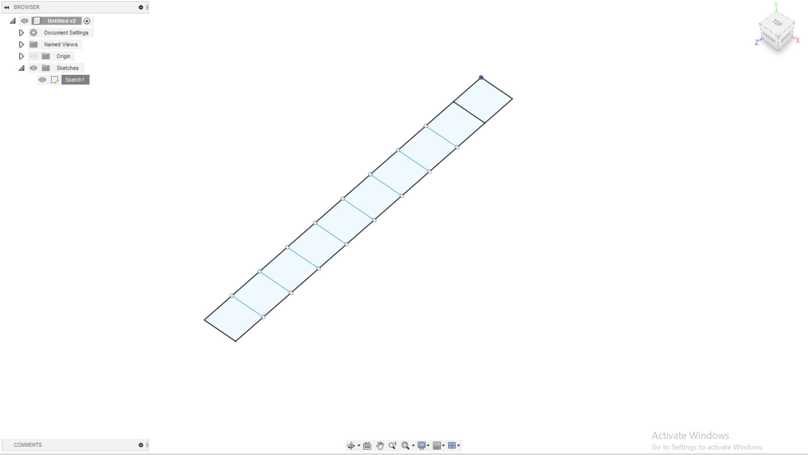
Þegar búið er að teikna prufuna er hún færð yfir í InkScape þar sem teikningunni er stillt upp við kant skurðarsvæðisins.
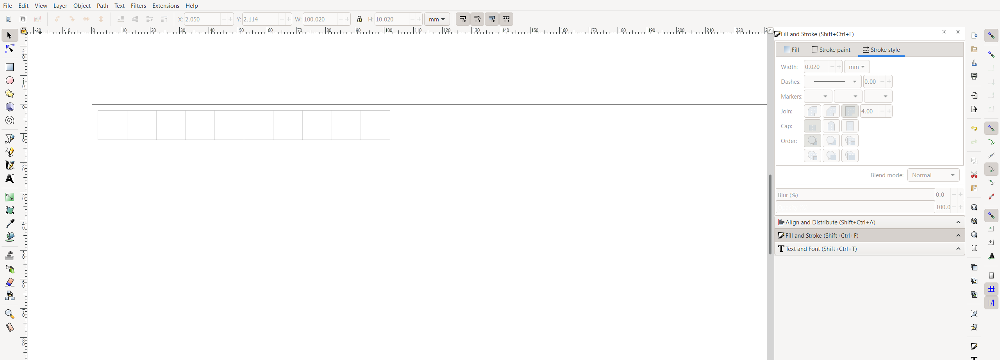
Til þess að skerinn skeri í gegn um plötuna, en risti ekki aðeins í hana, þarf að færa inn ákveðnar stillingar. Hér að neðan má sjá hvernig Fill and Stroke stillingar eru opnaðar. Þar er valið að nota ekkert Fill og Stroke style stillt. Línuþykktin 0,02 gefur til kynna að skera eigi í gegn um plötuna.
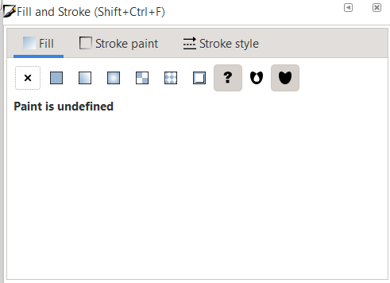
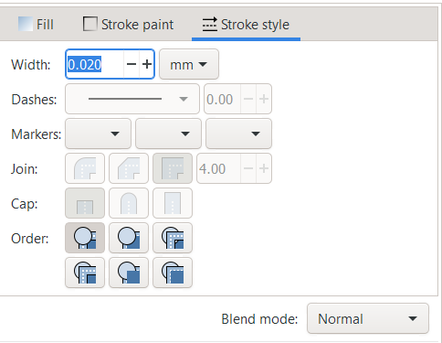
Teikningin er vistuð á .pdf formi og færð á USB lykil. Lyklinum er í framhaldinu stungið í þá tölvu sem tilheyrir skeranum sem á að nota til að framkvæma verkefnið.
Krossviðarplötu er komið fyrir í laserskeranum.
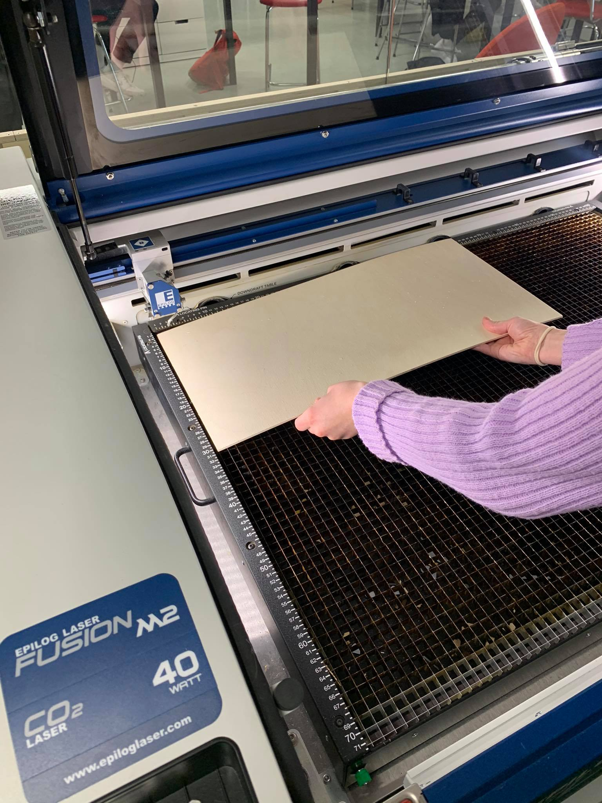
Skráin er opnuð í tölvunni og hún prentuð. Áður en hægt er að prenta þarf að opna Laser Anakin Properties þar sem að Vector Settings eru stilltar eins og sjá má hér að neðan. Þessar stillingar eiga við um laserskurð á við.
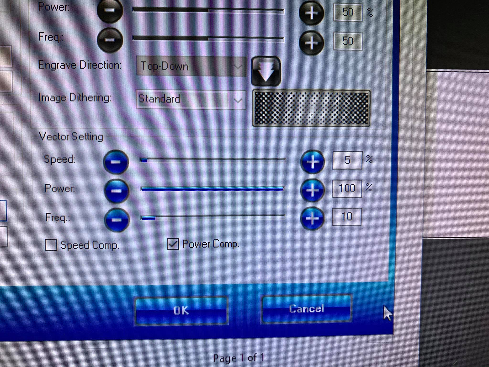
Þá er hægt að senda skrána yfir í laserskerann sem þarf svo að stilla áður en skurðurinn hefst. Til þess að stilla nálægð lasers við viðinn, þ.e. Z-ás, þarf að nota manual focus tool sem sjá má á mynd hér að neðan.
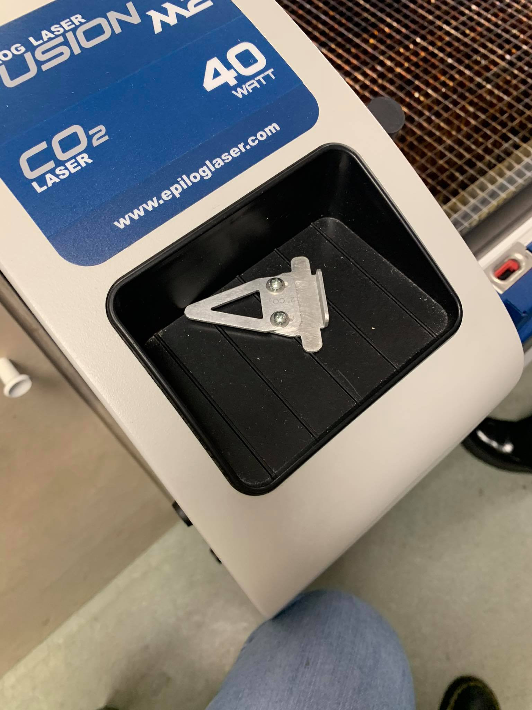
Járnið er hengt á laserinn og hann lækkaður þar til oddurinn á járninu kemst í snertingu við viðinn.
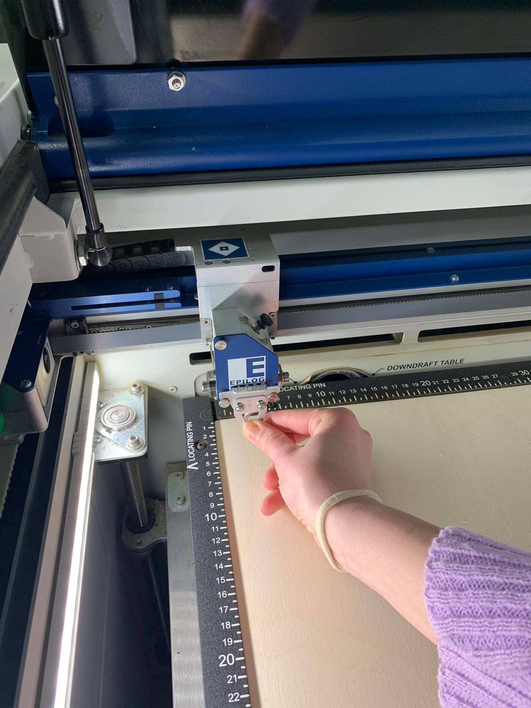
Því næst eru x- og y-ásar stilltir með stýrihnappi þannig að rauður ljósgeisli sé efst í vinstra horni, sem næst brúninni. Þetta er núllpunktur skurðarins. Þá þarf að kveikja á loftpressu sem hreinsar óæskilegar gufur frá skeranum.
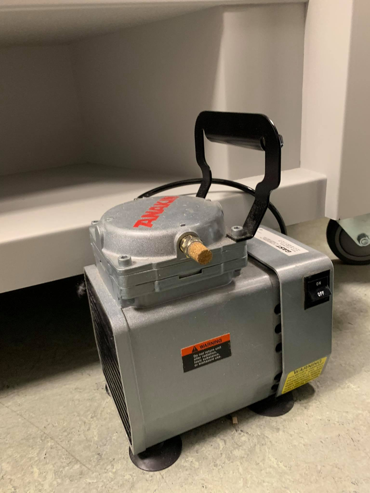
Þegar þessu er lokið er hægt að ýta á start.
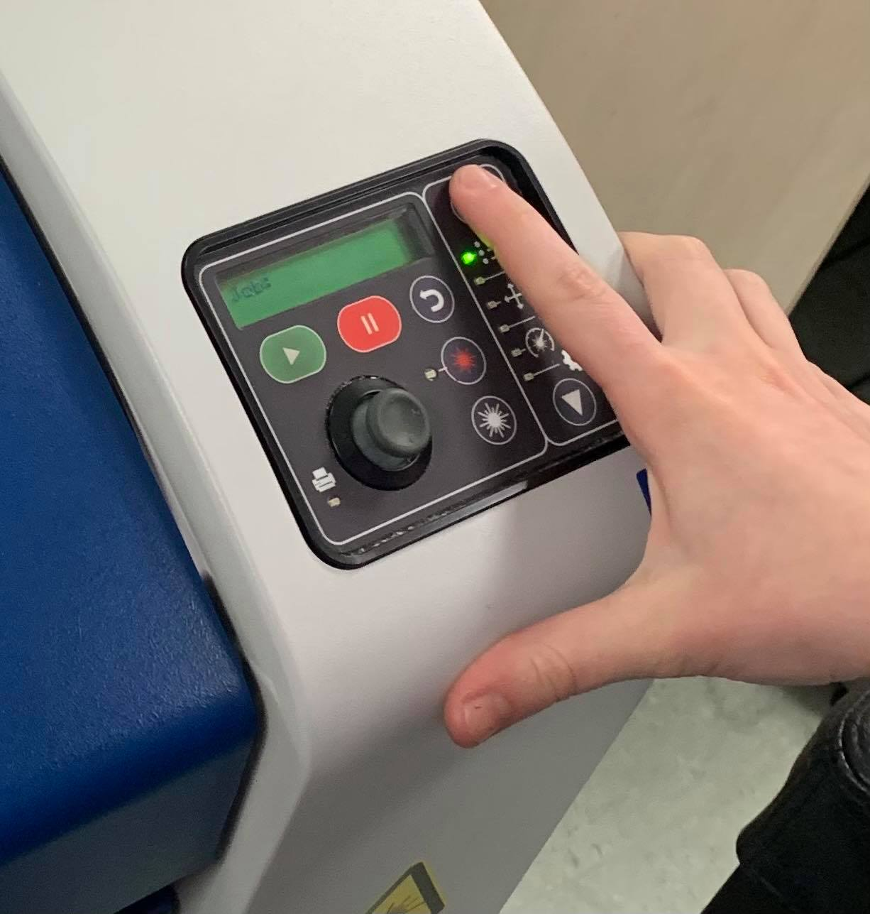
Hér má sjá laserskurðinn í framkvæmd.
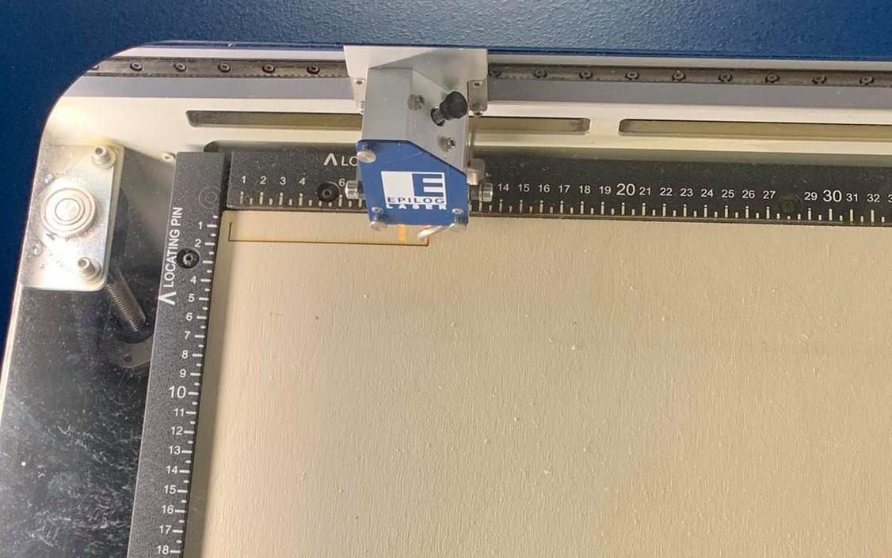
Hér að neðan má sjá kerf prufuna.
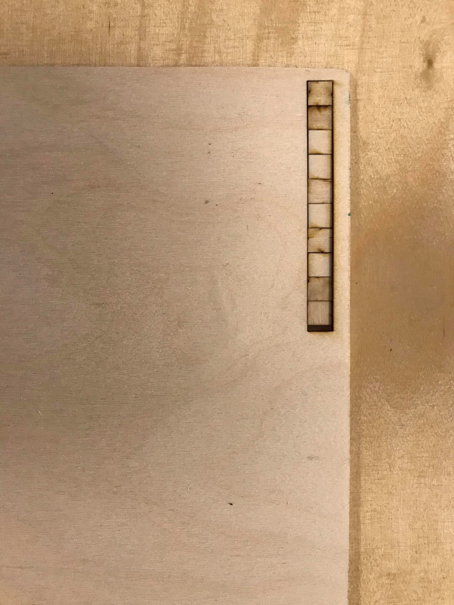
Þá er komið að því að finna út hve stórt kerfið er. Þá er einn kubbanna í prufunni tekinn úr og bilið mælt.
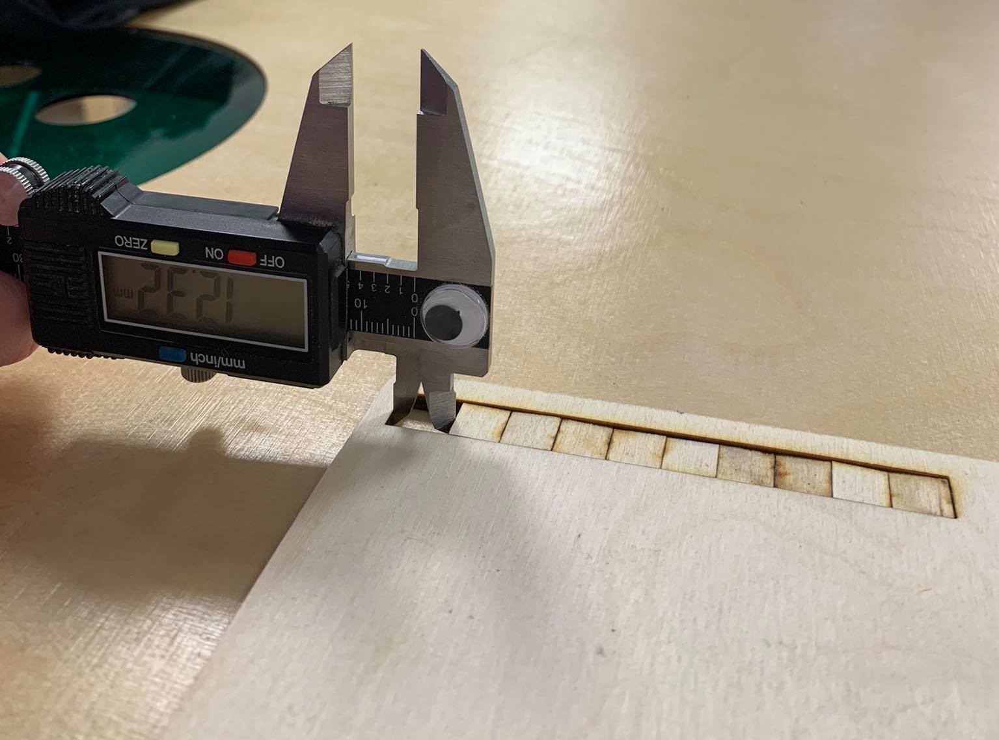
Þá er kubburinn sem tekinn var úr prufunni mældur og í framhaldi er stærð hans dregin frá stærð bilsins.
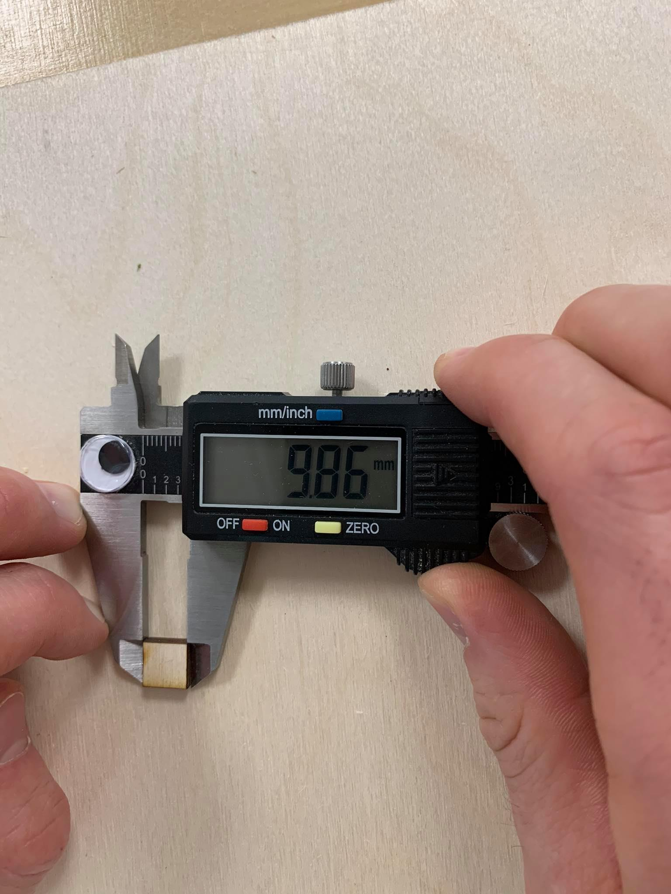
Þá er kubburinn sem tekinn var úr prufunni mældur og í framhaldi er stærð hans dregin frá stærð bilsins.
Lengdinni, sem stendur eftir, er svo deilt með fjölda skurða, eða 11. Niðurstaðan er kerf laserskerans, sem er 0,22 mm. Þessar upplýsingar eru svo nýttar í að auka nákvæmni skurðarins þegar einstaklingsverkefni 2 er framkvæmt.